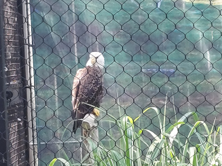

Image arithmetic is the process of taking two images and doing calculations on their color channels, resulting in a new image that's a combination of the two.
This should be a relatively easy tutorial — less code and more looking at images.
What you're about to see is the code that loads in the images and allows you to do the arithmetic.
These are the source images. Feel free to paste them into your workspace:
Here's the code. The function that loads the images was taken from this script.
var images = Promise.all([loadImage("MathImage1.jpg"), loadImage("MathImage2.jpg"), loadImage("MathImage3.jpg")]);
var canvas = document.createElement("canvas");
//All images should be around these dimensions
canvas.width = 320;
canvas.height = 240;
var ctx = canvas.getContext("2d");
var buffer = ctx.createImageData(canvas.width, canvas.height);
function drawImages(data) {
//Get the individual images
let image1 = data[0];
let image2 = data[1];
let image3 = data[2];
//Do the image arithmetic
//Since we're not working with x- or y-values directly, only one loop is needed.
for (let id = 0; id < buffer.data.length; id += 4) {
buffer.data[id] = Math.floor(image1.data[id] * weight + image2.data[id] * (1 - weight));
buffer.data[id + 1] = Math.floor(image1.data[id + 1] * weight + image2.data[id + 1] * (1 - weight));
buffer.data[id + 2] = Math.floor(image1.data[id + 2] * weight + image2.data[id + 2] * (1 - weight));
buffer.data[id + 3] = 255;
}
ctx.putImageData(buffer, 0, 0);
}
images.then(drawImages);
document.body.appendChild(canvas);Addition is when you add the corresponding color channels of the images together. Each color component is a number between 0 and 255, so if the sum of the two colors is greater than 255, it gets truncated to 255, due to the way ImageData objects store color information.
Copy and paste the following into the arithmetic loop to see the result of the sum of two photos.
buffer.data[id] = image1.data[id] + image2.data[id];
buffer.data[id + 1] = image1.data[id + 1] + image2.data[id + 1];
buffer.data[id + 2] = image1.data[id + 2] + image2.data[id + 2];
buffer.data[id + 3] = 255;As you can see, the images were so bright that a lot of the color values were truncated to 255, and appear white as a result. However, if you look closely, you can still see the trees from the first image.
Subtraction works in a similar way, but in this case, negative values are truncated to 0.
buffer.data[id] = image3.data[id] - image1.data[id];
buffer.data[id + 1] = image3.data[id + 1] - image1.data[id + 1];
buffer.data[id + 2] = image3.data[id + 2] - image1.data[id + 2];
buffer.data[id + 3] = 255;The tree picture was subtracted from the eagle picture, so it appears negative, which explains the bluish colors. The bright sky from that picture causes the upper portion of the image to appear incredibly dark.
The order of subtraction is important. If you subtract the first image from the third, you get this instead:
Difference is basically identical to subtracting, but instead of letting negative values be truncated, you use their absolute value, so you get the difference between the colors of both images.
buffer.data[id] = Math.abs(image3.data[id] - image1.data[id]);
buffer.data[id + 1] = Math.abs(image3.data[id + 1] - image1.data[id + 1]);
buffer.data[id + 2] = Math.abs(image3.data[id + 2] - image1.data[id + 2]);
buffer.data[id + 3] = 255;Now the black parts of one image are filled with color from the other image.
When multiplying images, you'll have to do things a little differently. If you multiply the color values as-is, you're probably going to get a blank white square unless the source images are really, really dark. Instead, convert the values to decimals between 0 and 1, and multiply those. The result will also be between 0 and 1, and can be returned to normal by multiplying it by 255.
buffer.data[id] = (image1.data[id] / 255 * image2.data[id] / 255) * 255;
buffer.data[id + 1] = (image1.data[id + 1] / 255 * image2.data[id + 1] / 255) * 255;
buffer.data[id + 2] = (image1.data[id + 2] / 255 * image2.data[id + 2] / 255) * 255;
buffer.data[id + 3] = 255;The bright sky in the image with the trees can be seen as 1 or close to it, so by multiplying that by 1, most of the upper part of the bench image is kept, albeit significantly more... blue. Since both images have fairly bright colors, the rest of the combined image kind of blends together.
The average is obtained by adding the two images, and dividing the result by 2.
buffer.data[id] = (image1.data[id] + image2.data[id) / 2;
buffer.data[id + 1] = (image1.data[id + 1] + image2.data[id + 1]) / 2;
buffer.data[id + 2] = (image1.data[id + 2] + image2.data[id + 2]) / 2;
buffer.data[id + 3] = 255;Cross-fading can be achieved using a weighted average. At first, the first image has a high weight, and the second one has a much lower weight. Over time, the weight of the first image decreases, while the weight of the second image increases, creating a nice, smooth fade. Here's an example where the weight of the first image is 0.75, while the weight is the second image is 0.25.
buffer.data[id] = Math.floor(image1.data[id] * 0.75 + image2.data[id] * 0.25);
buffer.data[id + 1] = Math.floor(image1.data[id + 1] * 0.75 + image2.data[id + 1] * 0.25);
buffer.data[id + 2] = Math.floor(image1.data[id + 2] * 0.75 + image2.data[id + 2] * 0.25);
buffer.data[id + 3] = 255;The eagle image is now more visible than the trees.
Of course, to see the full effect of the cross-fade, we'll need to animate it, and for that, we'll need to modify our code a bit. For that, the drawing function is modified to accomodate window.requestAnimationFrame(), and the weight is a value that goes from 0 to 1 for the first image, and 1 to 0 for the second image by using 1 - weight.
Weight normally goes linearly from 0 to 1, but here, we do something special: the weight is based on the cosine of the animation's current time. This means that both images will constantly fade in and out, cycling between each other infinitely. Since the cosine returns a value between 0 and 1, while we want a value between 0 and 1, add 1 to it and divide the result by 2.
var images = Promise.all([loadImage("MathImage1.jpg"), loadImage("MathImage2.jpg"), loadImage("MathImage3.jpg")]);
var canvas = document.createElement("canvas");
//All images should be around these dimensions
canvas.width = 320;
canvas.height = 240;
var ctx = canvas.getContext("2d");
var buffer = ctx.createImageData(canvas.width, canvas.height);
//Declare image variables outside of the function
var image1;
var image2;
var image3;
function drawImages(time) {
let weight = (1 + Math.cos(Date.now() / 1000)) / 2;
//Do the image arithmetic
//Since we're not working with x- or y-values directly, only one loop is needed.
for (let id = 0; id < buffer.data.length; id += 4) {
buffer.data[id] = Math.floor(image1.data[id] * weight + image2.data[id] * (1 - weight));
buffer.data[id + 1] = Math.floor(image1.data[id + 1] * weight + image2.data[id + 1] * (1 - weight));
buffer.data[id + 2] = Math.floor(image1.data[id + 2] * weight + image2.data[id + 2] * (1 - weight));
buffer.data[id + 3] = 255;
}
//Draw the final image and continue the animation
ctx.putImageData(buffer, 0, 0);
window.requestAnimationFrame(drawImages)
}
images.then((data) => {
image1 = data[0];
image2 = data[1];
image3 = data[2];
window.requestAnimationFrame(drawImages)
});
document.body.appendChild(canvas);Here's what it looks like in motion:
This involves taking only the color value with the lowest or highest value, for example taking the minimum of both:
buffer.data[id] = Math.min(image1.data[id], image2.data[id]);
buffer.data[id + 1] = Math.min(image1.data[id + 1], image2.data[id + 1]);
buffer.data[id + 2] = Math.min(image1.data[id + 2], image2.data[id + 2]);
buffer.data[id + 3] = 255;Here's the result:
Because both the trees picture and the bench picture have fairly similar colors, both of them kind of just blend together. The blue from the sky in the former mixes together with the duller details in the latter image, resulting in a lot of bluer tones.
Taking the maximum will give you a completely different result. Here, the brighter colors from the trees and sky in the first image almost completely dominate the result, but the details of the second image can still be seen.
buffer.data[id] = Math.max(image1.data[id], image2.data[id]);
buffer.data[id + 1] = Math.max(image1.data[id + 1], image2.data[id + 1]);
buffer.data[id + 2] = Math.max(image1.data[id + 2], image2.data[id + 2]);
buffer.data[id + 3] = 255;
The amplitude is calculated by using the formula of the amplitude on the two corresponding color channels. This formula is the square root of (x2 + y2), or Math.sqrt(x * x + y * y). Because the result of this can be roughly 1.41 times larger than 255, it's divided by 1.41, or the square root of 2, to keep it within the 0-255 range.
buffer.data[id] = Math.sqrt(image1.data[id] * image1.data[id] + image2.data[id] * image2.data[id]) / Math.sqrt(2);
buffer.data[id] = Math.sqrt(image1.data[id + 1] * image1.data[id + 1] + image2.data[id + 1] * image2.data[id + 1]) / Math.sqrt(2);
buffer.data[id] = Math.sqrt(image1.data[id + 2] * image1.data[id + 2] + image2.data[id + 2] * image2.data[id + 2]) / Math.sqrt(2);
buffer.data[id + 3] = 255;In the future, it may be a good idea to define a variable for Math.sqrt(2) outside of the draw loop, but this will work for now.
To conclude this lesson, we are now going to perform bitwise operations on the color values. Unfortunately, the results on normal photos can be very ugly.
For example, here's what happens when you use the AND operator:
buffer.data[id] = image1.data[id] & image2.data[id];
buffer.data[id + 1] = image1.data[id + 1] & image2.data[id + 1];
buffer.data[id + 2] = image2.data[id + 2] & image2.data[id + 2];
buffer.data[id + 3] = 255;Or would you prefer OR?
buffer.data[id] = image1.data[id] | image2.data[id];
buffer.data[id + 1] = image1.data[id + 1] | image2.data[id + 1];
buffer.data[id + 2] = image2.data[id + 2] | image2.data[id + 2];
buffer.data[id + 3] = 255;The results from the XOR operator are also not particularly appealing.
buffer.data[id] = image1.data[id] ^ image2.data[id];
buffer.data[id + 1] = image1.data[id + 1] ^ image2.data[id + 1];
buffer.data[id + 2] = image2.data[id + 2] ^ image2.data[id + 2];
buffer.data[id + 3] = 255;As you can see, it's somewhat difficult to get an appealing result, but you never know when it could come in handy, maybe as some kind of image compression.